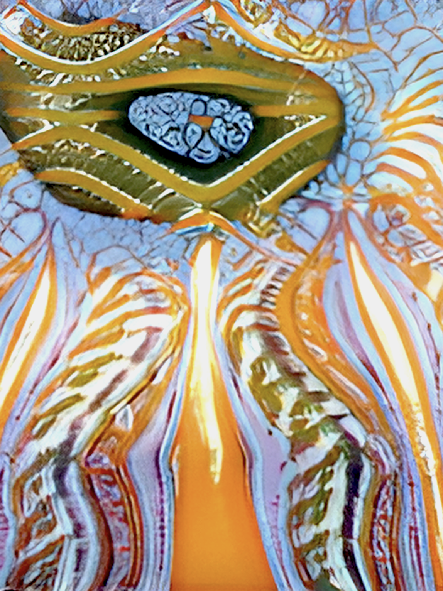
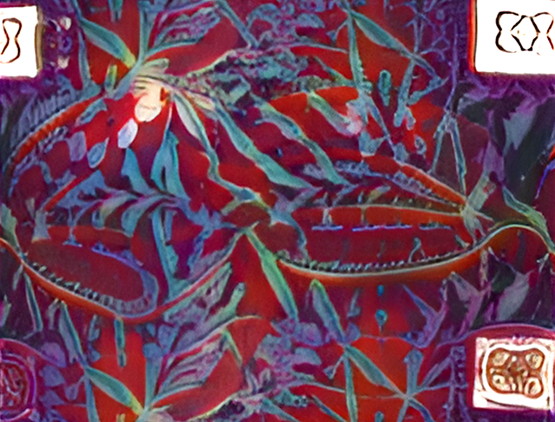
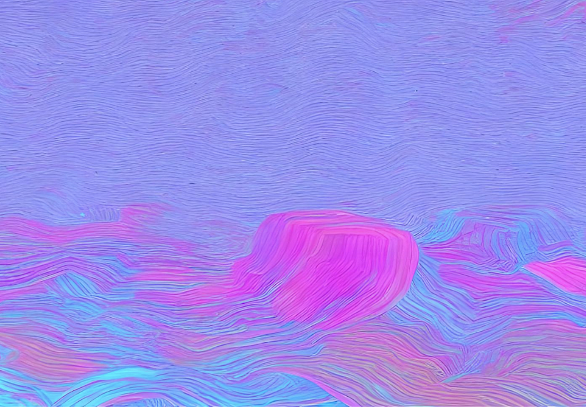
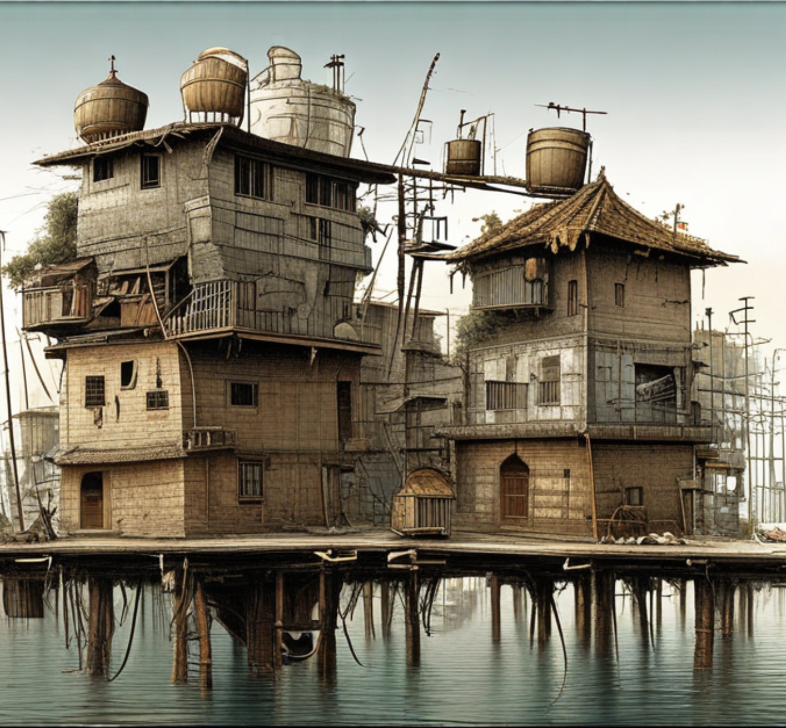
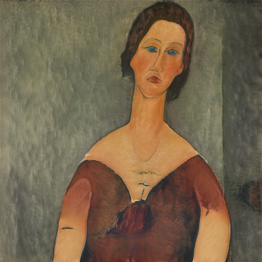

expand_less Critical AI: Philosophy, Arts, Tech and Critical Studies On the latent space from a philosophical, technical and creative perspective.
chevron_left Generative AI: Representation learning, Disentanglement Delving into vision AI's internal representations.

chevron_left AI Art Curation. Reviving data and recreating art in the city of Helsinki.
Literary metaphors of multimodal AI. Atlas? Chessboard? Aleph? Library? Garden?. chevron_right


chevron_left AI Art Authentication. Does AI get a say as an Art Connoisseur, Art Critic or Art Historian?